Lenses
A lens annotates words in the reader according to their category. Examples of categories would be parts of speech and codes. The Word class lens, for instance, underlines all nouns in blue and all verbs in red, whereas the Codes lens renders your codings in the respective code’s color.
Lenses assist you in spotting patterns in texts as you read them. When you enable Negation in the op-ed “Running Out of Time”, for instance, all instances of not, never, and nobody, along with whatever they negate in the sentence, become visually obvious to you. Similarly, enabling a dictionary of hedges as a lens can reveal where the author softens a claim. Typically, you will use lenses to identify passages relevant to your question and then conduct a close reading of them prior to coding and counting. All examples used in this chapter were taken from “Climate Debate”, the example project of this guide, which File ▸ Import ▸ Example Project adds to your library (see The example project in Chapter 1, Introduction).
Lenses at a glance
Every category annotated by a lens is an aspect of the lens. Some examples include Noun in Word class or Obligation in Modality. There are only certain aspects that have colors in common; all other aspects have a unique color associated with them. Above the text, most lenses show a legend, which is made up of colored lenslets that represent aspects. You use the legend to determine what each color means and to enable or disable individual aspects of the lens. Reading a lens later in this chapter provides further detail.
There are five different types of lenses offered by LemmaLoom:
- Built-in lenses ranging from Word class to Rhetoric render the grammar analysis performed on the document during indexing (see Chapter 21, Analysis and Indexing).
- The Codes and Bookmarks lenses render your annotations made on the document.
- Dictionaries have their own lenses, dictionary lenses, which annotate their terms. Each category has its own color (see Chapter 19, Dictionaries).
- Query lenses render the hits of a saved query (see Chapter 18, Using Query Results).
- Analyzer lenses represent findings made via one of your own analyzers (see Chapter 20, Custom Analyzers).
Built-in lenses are helpful to understand the wording and grammatical structure of texts and apply to any indexed document in LemmaLoom.
To view a document without any lens, select Clear All in the lens menu.
Each currently open document stores its own lenses. If two documents are viewed side by side (see Reading two documents side by side in Chapter 5, Reading and Editing), for instance, you can view “Running Out of Time” with Modality and the column “The Models Keep Missing” with Cohesion at the same time. Documents opened for the first time have the Codes and Bookmarks lenses enabled. For any document left open, LemmaLoom keeps track of enabled lenses and disabled aspects, and restores them upon opening the project again. Enabling or disabling a lens or aspect, or collapsing a document, takes effect immediately, while reversing these actions requires doing the opposite (see Changes outside the project in Chapter 23, Undo and Redo).
The lens menu is disabled until indexing completes. Additionally, the menu remains disabled for documents in languages other than English, German, and Chinese, although codings and bookmarks will still be displayed in them. Importing without indexing will also result in the menu staying disabled until indexing finishes (see Importing without indexing in Chapter 21, Analysis and Indexing).
The lens menu
The lens menu is the first of the tools at the right end of the title band, appearing before the magnifying glass and the Font, gutter, and text size menu (see The title band in Chapter 5, Reading and Editing). The label of the menu tells you whether lenses are enabled, how many lenses are enabled, and which:
- Lens when none is enabled;
- the lens’s name, e.g., Modality or Hedges, when one is enabled;
- the number of lenses, e.g., 2 Lenses, when multiple lenses are enabled.
When you hover the mouse pointer over the menu, you can see the names of the lenses that are currently enabled. Prior to indexing finishing, you’ll get a tooltip that reads Lenses become available when indexing completes. When editing a document’s text, both the lens menu and the legends will disappear from view.
“Running Out of Time” currently has three lenses enabled simultaneously in the figure below (Modality, Bookmarks, and Codes), hence 3 Lenses in the menu. Coding of both “Tipping Points” and “Deadlines” appears along the margin and within the text itself. After Bookmarks and Codes come two additional lenses in the menu that belong to “Climate Debate” (“Hedges”, the project dictionary, and “Urgency Talk”, a query lens).
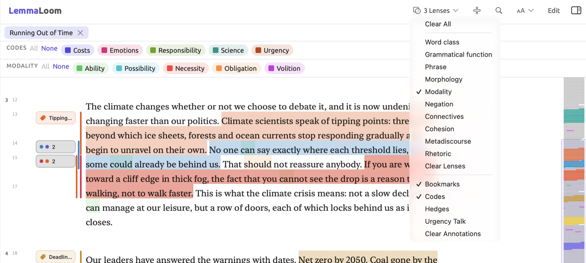
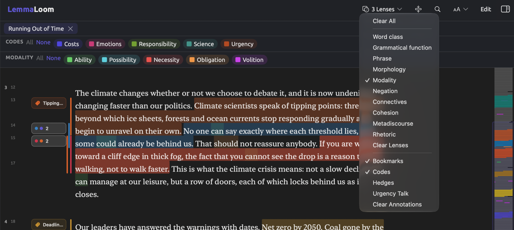
The menu contains a maximum of three groups, separated by lines:
| Group | What it contains |
|---|---|
| Built-in lenses | The built-in lenses available for the document’s language, in the order of the table under Built-in lenses later in this chapter, followed by Clear Lenses |
| Analyzers | Your own analyzers for the document’s language, followed by Clear Analyzers. The group appears only when there is at least one such analyzer. |
| Annotations | Bookmarks and Codes, then the project’s dictionaries in alphabetical order, then any query lenses, then the Auto Code… items, and last Clear Annotations |
The Clear All item is located above the groups.
To toggle a lens on or off:
- Open the document in the reader.
- Click the lens menu in the title band.
- Choose a lens. A checkmark appears beside it in the menu, and for most lenses a legend appears above the text.
- To add another lens, open the menu again and choose it. The menu closes after each choice.
- To disable a lens, choose it again.
The four Clear items will disable multiple lenses simultaneously:
| Item | What it disables |
|---|---|
| Clear All | Every lens, Codes and Bookmarks included |
| Clear Lenses | The built-in lenses in the first group, and any query lenses |
| Clear Analyzers | Every analyzer lens |
| Clear Annotations | Codes, Bookmarks, dictionary lenses, and query lenses |
If an item is disabled, then none of the lenses it would disable have been turned on. You may turn off the built-in lenses to stop their coloring from being displayed, while still reading with your codings, by clicking Clear Lenses.
The Auto Code… item codes the passages annotated by a dictionary, query, or analyzer lens (see Auto-coding from a lens in Chapter 7, Coding). You’ll find this item visible only when at least one such lens is enabled. If you’ve got multiple such lenses enabled, you get this item repeated for every lens you have enabled; for example, Auto Code with Hedges….
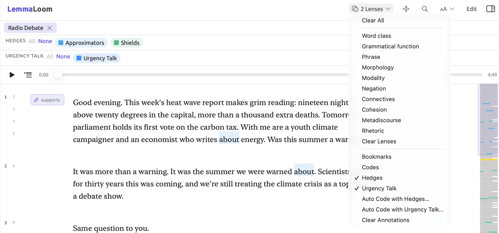
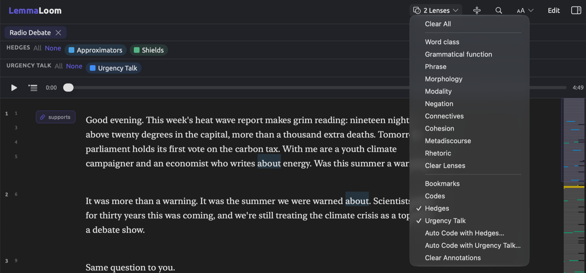
If you have the application opened up in full screen mode, the title band is hidden and the lens menu is relocated to your toolbar at the very top of your screen. There you have the same items, and the collapse button talked about later in this chapter becomes Collapse to Matches, whereas Expand Document is shown during the time the current document remains collapsed. During the time the indexing hasn’t completed yet, you see the disabled menu’s tooltip Not indexed yet (see The full-screen reader in Chapter 5, Reading and Editing).
When viewing two documents simultaneously side-by-side, your title band tools affect the currently active document pane. To switch active panes, click inside the other document pane.
Reading a lens
For most lenses, a legend appears above your text as soon as you enable the lens. This legend includes the lens’s title written out in capitals followed by its aspects, displayed as colored lenslets in the aspects’ respective colors. Clicking a lenslet will disable the aspect of the lens while clicking it again enables the aspect, causing its annotations within your document to disappear and reappear respectively. A disabled lenslet appears faded. Your legends will display themselves according to the sequence of activation of your lenses.
Most lenslets include a small square in the aspect’s color. However, the lenslets representing aspects that a lens underlines by default, such as New ending (stress) in Cohesion, show a short colored bar instead.
Choosing which aspects are enabled
Enabling a lens enables all of its aspects. Usually, you will narrow a lens so that only certain colors are displayed when you know you wish to ask questions about one or two of them specifically. It could be that you wish to study only the verbs, or perhaps only where the author states obligation.
- None disables all aspects, while All enables all aspects. All stays disabled while all aspects are enabled, and None stays disabled while none are.
- Right-clicking a lenslet brings up a shortcut menu. Enable only this enables only this aspect. Disable or Enable toggles the aspect, while Enable all enables all aspects again.
Disabling aspects causes their words to appear faint. Any annotations made by other lenses override the fading effects caused by disabling aspects.
The following figure shows the Modality legend of “Running Out of Time” with the shortcut menu of the Obligation lenslet displayed. Selecting Enable only this will show only the words expressing obligation, like should in “That should not reassure anybody.”
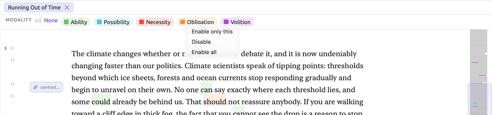
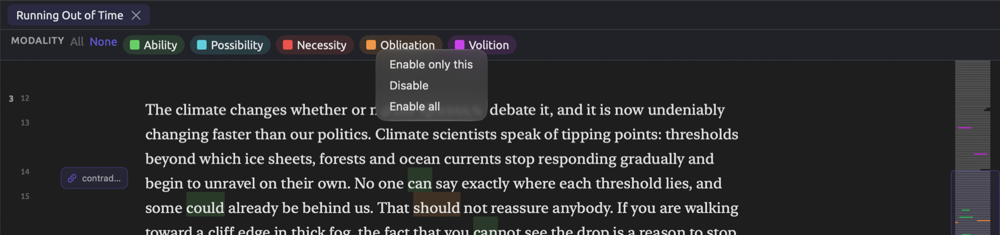
For keeping only a particular aspect of the lens:
- Enable the lens.
- In the legend, right-click the aspect’s lenslet and choose Enable only this.
- To enable every aspect again, click All.
Collapsing a document to annotated sentences means that the only thing left will be sentences containing annotations from an enabled aspect (for further explanation see Showing only annotated sentences in a later section of this chapter). Since the rows of the Auto Code dialog contain only the aspects which are enabled, any disabled aspects will be skipped in the auto code procedure.
You can also enable three lenses from the Grammar tab of the inspector. Open a category within its Discourse facet, under Cohesion, Metadiscourse, or Rhetoric, and click Highlight in text. LemmaLoom enables the lens if needed and filters it to display the contents of the selected category. Clicking the link again reverts all aspects to normal visibility (see Highlighting a category in Chapter 11, The Grammar Inspector).
Combining lenses
Annotations of the same word from two different lenses with identical annotation styles show both annotation colors together. Highlights become gradient blends with the top of the highlight rendered in the first lens color, and the bottom rendered in the second. Similarly, underline annotations become gradient blends where the left side of the underline is in the first annotation color, and the right side in the second. Finally, text color annotations are also gradient blends where each letter transitions from the first annotation color at the top to the second annotation color on the bottom side.
It’s advisable to pair lenses in ways that maximize readability, with one lens highlighting and the other underlining. By default, Word class and Grammatical function lenses use the underline annotation style while most others highlight words. Therefore, Modality should pair with Word class and not with Phrase, because Phrase highlights most words in your document, hiding the highlights of other lenses. Additionally, four of the lenses can have their annotation styles changed in Settings to make room for a third lens (see Lens colors and styles later in this chapter).
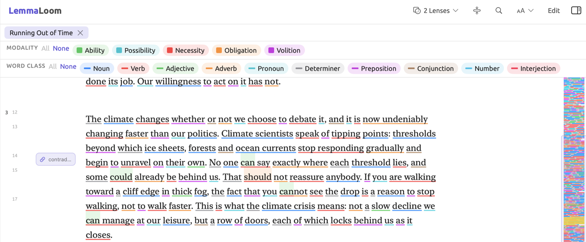
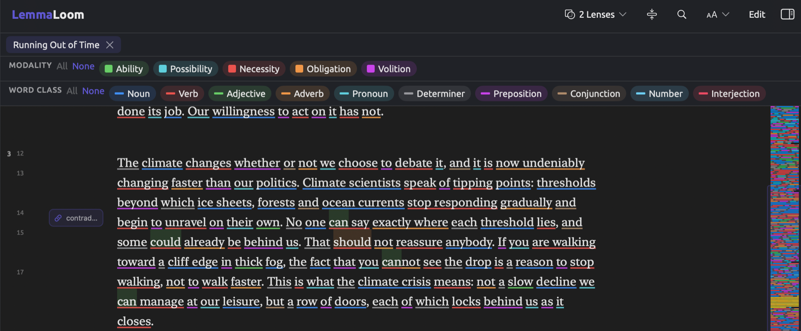
The document overview, the narrow vertical strip located at the right edge of the reader, displays the colors of the enabled lenses. This proves useful in cases where you’re dealing with very large documents because the document overview allows you to quickly locate clusters of annotations and move around the document using clicks (see The document overview in Chapter 5, Reading and Editing).
Showing only annotated sentences
Lenses can also be used to collapse the document to the sentences that they annotate. You could thus read all of the sentences referring to requirements, or all coded passages, consecutively. Collapse proves especially useful in cases where you have a large document to deal with, or when comparing multiple instances of similar sentences before coding them.
You initiate document collapse via the collapse button. It is located immediately to the right of the lens menu and displays just an icon (a rectangle flanked by two arrows) that turns tinted while the document is collapsed. This button displays itself whenever any of the built-in, dictionary, query, or analyzer lenses are enabled, or whenever Codes or Bookmarks is turned on and the document has codings or bookmarks.
While the document is collapsed, sentences remain visible if annotated with any lens currently enabled. That means that a built-in, dictionary, query, or analyzer lens will retain sentences containing one or several words carrying one of the aspects marked as enabled; while for Codes and Bookmarks, a sentence remains when a coding or bookmark, respectively, overlaps it.
Should there be any omitted sentences between two retained ones, a line of three spaced dots will indicate such omission. Sentences before the first retained one and beyond the last are excluded from the view without dots.
Take the example below wherein “Running Out of Time” features only the Modality lens enabled, with every aspect except Necessity disabled. Only three sentences were left after collapsing, two with must and one with need. Yet the latter, We do not need another report, denies a necessity rather than proposing one.
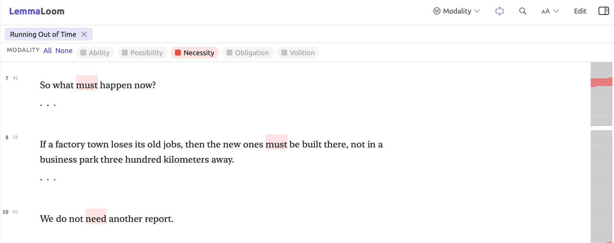
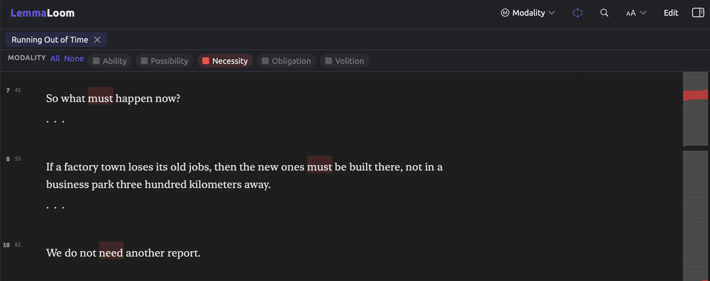
For a lens to show you only annotated sentences:
- Enable the lens, and disable the aspects you do not need in its legend.
- If you do not want coded and bookmarked sentences kept as well, disable Codes and Bookmarks. Clear Annotations disables both and keeps the built-in lenses enabled, though it also disables dictionary and query lenses.
- Click the collapse button.
- To read the whole document again, click the collapse button once more. Its tooltip now reads Show the whole document again.
When a document is collapsed, changes in lenses and aspects are immediately reflected in the document. When there are no sentences left, the entire document is revealed. Initiating an edit or opening Find (⌘F) does the same.
Codings, bookmarks, and memos added in the collapsed document will persist at their place in the full text.
Built-in lenses
The built-in lenses provide the analysis of the document’s grammar. This includes its words, the word class and morphology of those words, the relationships between them, and the phrases which are made from those words. Incorrectly performed grammar analyses will show up in the lenses as well. Most of the analyses are performed accurately in edited writing; however, they are less accurate on spoken language, which contains repetitions, interruptions, and incomplete sentences. It is advisable to first find potential passages via the lens, and review a sample of those passages before making claims about their frequency.
Certain lenses, including Modality, Connectives, and Metadiscourse lenses, use short word lists rather than grammar. These annotate an occurrence of a listed word whenever it fits within its proper grammatical word class, whatever it means in context.
Which built-in lenses are available within LemmaLoom depends on the language of the analyzed document:
| Lens | English | German | Chinese |
|---|---|---|---|
| Word class | Yes | Yes | Yes |
| Grammatical function | Yes | Yes | Yes |
| Phrase | Yes | Yes | Yes |
| Morphology | Yes | Yes | No |
| Modality | Yes | Yes | Yes |
| Negation | Yes | Yes | Yes |
| Connectives | Yes | Yes | Yes |
| Sentence fields | No | Yes | No |
| Constructions | No | No | Yes |
| Particles | No | No | Yes |
| Cohesion | Yes | Yes | Yes |
| Metadiscourse | Yes | Yes | Yes |
| Rhetoric | Yes | Yes | Yes |
Cohesion, Metadiscourse, and Rhetoric all come from analyses carried out via analyzers during indexing. You can find which analyzers were used on your document in Document Properties under Indexing (right-click your document in the navigation sidebar, then choose Properties). Should you remove any of their output there, then their corresponding lens will vanish from the lens menu for your document; clicking Run will bring it back (see Removing an analyzer’s output in Chapter 21, Analysis and Indexing).
Word class
Word class underlines every word in the document according to its part of speech. The legend consists of ten aspect lenslets, and includes Noun, Verb, Adjective, Adverb, Pronoun, Determiner, Preposition, Conjunction, Number, and Interjection. This lens offers you a quick glimpse into the structure of your texts by looking at how much weight a text puts on certain word classes; for example, official reports often rely heavily on nouns. By keeping just the Adjective aspect on, you will get a visualization of what kinds of adjectives writers use to evaluate.
When taking apart The fuel tax rarely spares a rural family in the Word class lens, fuel, tax, and family are underlined as nouns, spares as a verb, rarely as an adverb, rural as an adjective, and The and a as determiners.
The figure below shows the opening of “Running Out of Time”, the story of one hot night, with Word class enabled.
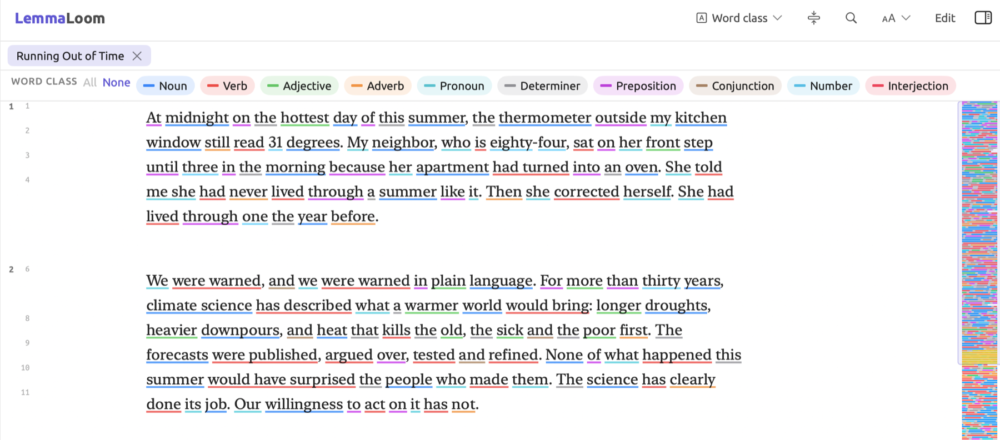
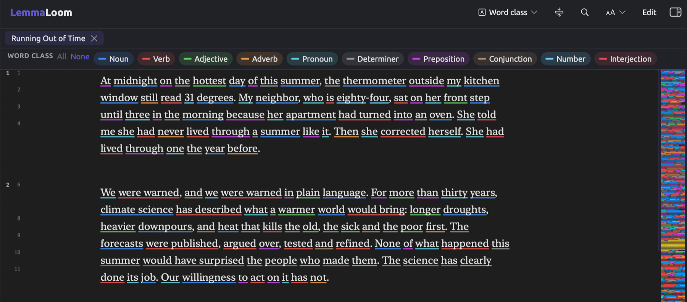
The classes are wide categories, and a few of them contain words beyond what they seem to categorize at first glance:
- Verb contains auxiliary verbs and modals like have, be, can, and should.
- Pronoun, in English, includes possessive pronouns such as my and their, as well as there in there is. Possessive pronouns in German, such as mein and ihr, fall under Determiner.
- Particles, including English to in to work, up in pick up, and the possessive ’s; German zu and nicht; and Chinese 的 and 了 all belong to the class Preposition.
- In English, Preposition covers subordinating conjunctions such as because, if, and that (I think that). These are labeled like prepositions in English analyses and categorized as Conjunction in German and Chinese.
Any word that does not fit into the ten classes, such as foreign words, receives a gray underline.
Grammatical function
Grammatical function underlines each word according to its role within the sentence structure. The lens will indicate who or what performs actions within texts, e.g., whether the climate is the subject of a verb, as in the climate changes, or its object, as in protect the climate.
All words besides the main verb are linked to one other word, their head, within a sentence structure. For example, in a rural family, the term rural is linked to family. Each word is colored according to its own relation to its head. Within a phrase structure, therefore, the main word shows the phrase’s job, and the terms that function as modifiers to it will be colored as either Adjectival or Adverbial.
In The fuel tax rarely spares a rural family:
- tax is marked Subject, while The and fuel are colored as Adjectival;
- rarely is colored Adverbial;
- family is marked Object, and both a and rural are colored Adjectival;
- finally, the main verb spares is left uncolored.
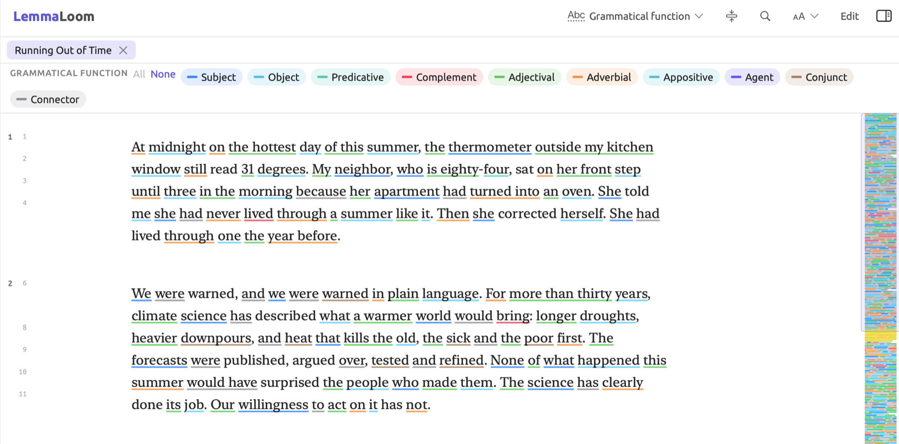
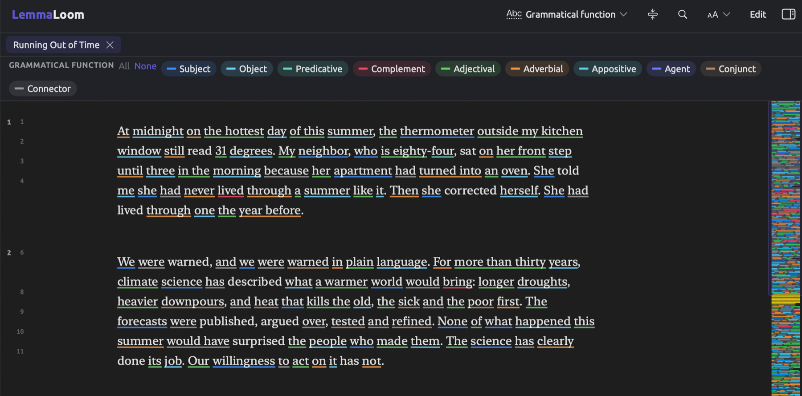
There are ten aspect lenslets within the legend:
| Aspect | What it annotates | Example |
|---|---|---|
| Subject | The subject of a verb, including it and there used as empty subjects | students in two students fainted |
| Object | The object of a verb or of a preposition | petitions in signed more petitions; road in on a road |
| Predicative | A word that completes a linking verb such as be or seem | expensive in floods are expensive |
| Complement | The verb of a clause that completes another verb | share in the country has to share the bill |
| Adjectival | A word that modifies a noun, such as an article, adjective, possessive, number, noun used as a modifier, or preposition attached to a noun | rural in a rural family; of in the end of the decade |
| Adverbial | A word that modifies a verb, adjective, or adverb, including prepositions attached to a verb, adverbial clauses, and not | rarely; after in voted after midnight |
| Appositive | A noun phrase that renames the one beside it | carrier in one of my regulars, a retired mail carrier |
| Agent | The by that introduces the doer of a passive verb | by in filtered by fear |
| Conjunct | The second and later members of a coordination | skeptics in activists and skeptics |
| Connector | Small linking words, such as conjunctions, subordinators, auxiliary verbs, and particles | and; because; have in have warned |
There are separate analyses for German and Chinese, with their own sets of relations. LemmaLoom sorts both into the same ten functions, and thus the colors represent nearly the same roles within each language. With the German analysis, though, the von phrase of a passive construction receives the label passive subject; thus, in von der Regierung beschlossen, von becomes colored as Subject. If a word does not correspond to any of the ten functions, for instance the sentence’s main verb, then no color will be applied.
Phrase
Phrase highlights words according to the smallest phrase that contains them. Noun phrases in official prose such as “Heat Wave Report 2024” stand out easily due to how long they usually are, allowing you to contrast these noun phrases with those of a speech.
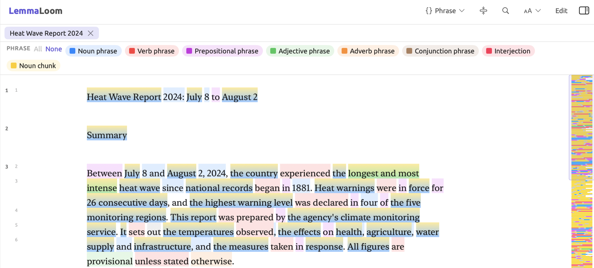
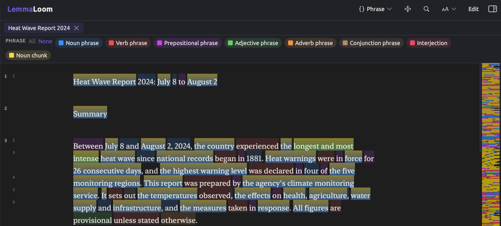
In the legend, each type of phrase receives an aspect lenslet, namely Noun phrase, Verb phrase, Prepositional phrase, Adjective phrase, Adverb phrase, Conjunction phrase (as well as, rather than), and Interjection. Words whose smallest phrase is of another type (e.g., up in pick up) receive gray highlighting.
Another aspect, Noun chunk, marks the nucleus of a noun phrase as a block. This means a noun or pronoun functioning as a subject or object in addition to the preceding words that form part of the same noun phrase. For instance, in We wrote to the city council after the flood, the three noun chunks are We, the city council, and the flood. Consequently, words that lie within a noun chunk receive two highlights, which blend into each other (see Combining lenses earlier in this chapter). You can toggle off the Noun chunk aspect in the legend to observe phrases alone, or keep only Noun chunk to observe the chunks.
Morphology
Morphology color-codes every word according to one of its grammatical features, which include tense, number, degree, verb form, and, in German, case, mood, and gender. Aspect lenslets name a feature, followed by one value of that feature, such as Tense: Past or Number: Plural. With the lens enabled, you would be able to trace a change of tenses, such as how “Running Out of Time” transitions from telling a story about one hot night into the present tense. This change often marks a transition in a text from anecdote into argument.
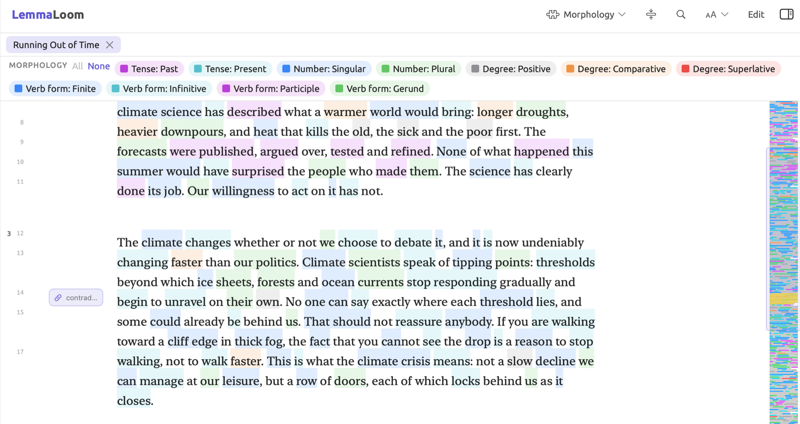
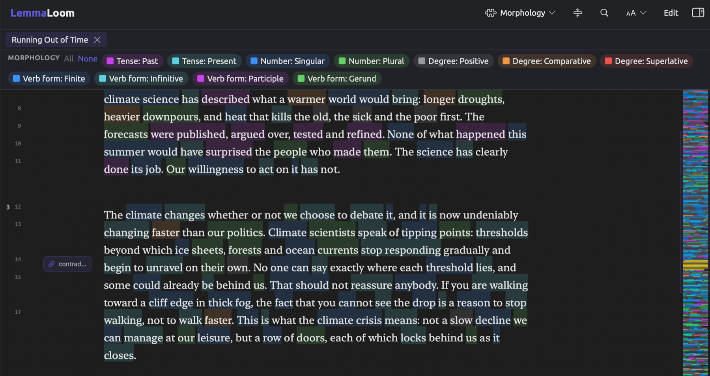
Every word may express several features simultaneously. For example, the German noun Aktivistinnen expresses case, number, and gender. With the lens enabled, each word only receives the first available feature from this list:
| Language | Order |
|---|---|
| English | Tense, Number, Degree, Verb form |
| German | Case, Mood, Tense, Verb form, Degree, Number, Gender |
Verbs in English usually indicate their tense; nouns and pronouns indicate their number; and adjectives indicate their degree (positive hot, comparative hotter, superlative hottest). Past participles such as warmed in has warmed are marked with Tense: Past since tense takes precedence. Base forms such as act in to act are marked with Verb form: Infinitive.
Pairs of aspects sometimes share a color in LemmaLoom. Aspects such as Tense: Present and Verb form: Infinitive in English share the same teal color, making acts and to act look alike; in German, Case: Genitive shares the purple of Tense: Past. If you need to tell them apart, change the color of either aspect under Settings. The Lens colors and styles section later in this chapter covers lens color and style customization further.
Nouns, articles, adjectives, and pronouns in German indicate their cases. When a verb is in Mood: Subjunctive or Mood: Imperative, it indicates its mood. All other finite verbs indicate their tense; infinitives and participles indicate their verb form (Verb form: Infinitive, Verb form: Participle). Thus, with all aspects enabled, Number and Gender are limited exclusively to words lacking any case in German.
Modality
The Modality lens highlights words that express possibility, necessity, and volition within the texts. Through it, you are able to observe how much certainty there is within a document. For instance, you may compare how often activist and skeptical writings say that something must happen, and how often that it might. Modality works from lists of words which are matched according to dictionary forms. Each word in a list is annotated only as a verb, auxiliary, or adverb (in English also as an adjective, for able).
| Aspect | English | German | Chinese |
|---|---|---|---|
| Ability | can, could, able | können | 能, 会, 可以, 能够 |
| Possibility | may, might, perhaps, maybe, possibly | mögen, dürfen, vielleicht, möglicherweise, eventuell | 可能, 也许, 或许, 大概, 恐怕, 兴许 |
| Necessity | must, need | müssen | 必须, 需要, 务必, 必得 |
| Obligation | should, ought, shall | sollen | 应该, 应当, 该, 理应 |
| Volition | will, would, want, wish, intend | wollen, möchten | 要, 想, 愿意, 打算, 希望 |
| Subjunctive | any other verb in the subjunctive, such as hätte or wäre |
The Subjunctive aspect is unique to German alone. When a German modal verb is in the subjunctive mood, like könnte for example, it retains the aspect of its modal verb, which would be Ability.
The lists match words irrespective of meaning. In the quote In 2050 she will be thirty-five from “Running Out of Time”, the word will, a plain future, carries the aspect of Volition.
Negation
Negation highlights the negating word(s) as Negator and underlines the scope they operate on within the sentence as Negation scope. The lens detects denials, and the places where writers refute a particular stance, as in “not a slow decline we can manage at our leisure” in “Running Out of Time”.
Negators are words such as not, n’t, never, no, nobody, nothing, none, neither, nor, and nowhere in English, along with any other word tagged as negation via the English analysis. In German, the negators include nicht, kein, nie, niemals, niemand, nichts, weder, and noch. However, the word noch is annotated regardless of its meaning; therefore, wir haben noch Zeit (we still have time) would receive annotation too. Chinese negators include 不, 没, 没有, 别, 无, and 未 among others.
The negation scope consists of the word the negator is attached to plus everything grammatically dependent on it. If the negator modifies the main verb, which is the case with most uses of not, then nearly the whole clause would become the scope. An example of such a case would be We do not need another report, in “Running Out of Time”. Not would be highlighted as the negator while all other words, including We and do, would be underlined as scope. In No minister wanted the carbon tax, No is attached to minister, so only minister is underlined.
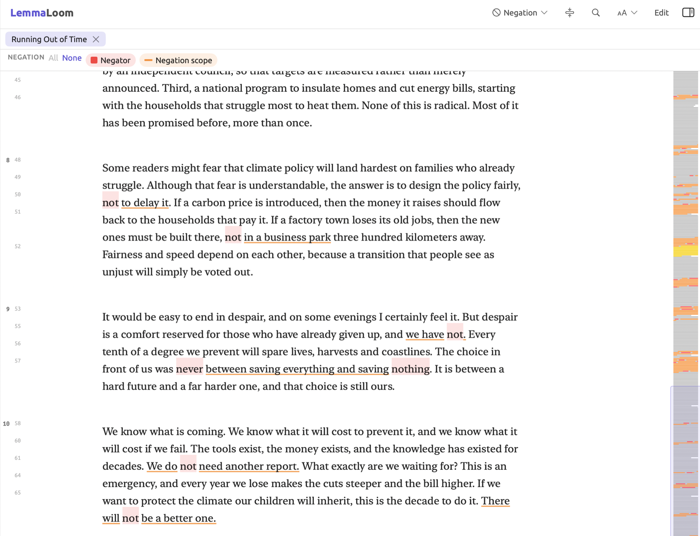
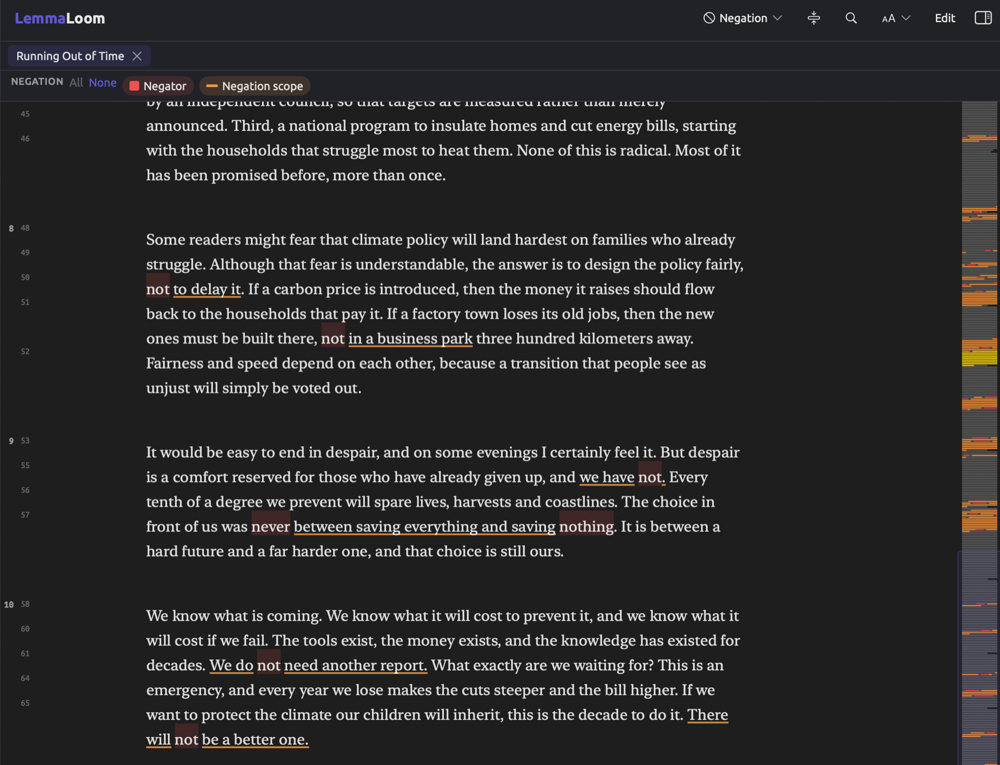
Connectives
Connectives classifies connecting words according to their meaning, which may include causation (e.g., because) or opposition (e.g., but). The lens allows you to map the logic of your documents, such as determining where reasons were provided and where points were conceded. Working from word lists, Connectives specifically focuses on finding where connecting words function as conjunctions/adverbs.
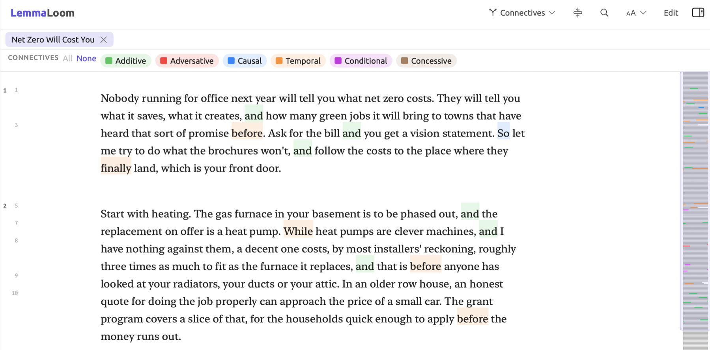
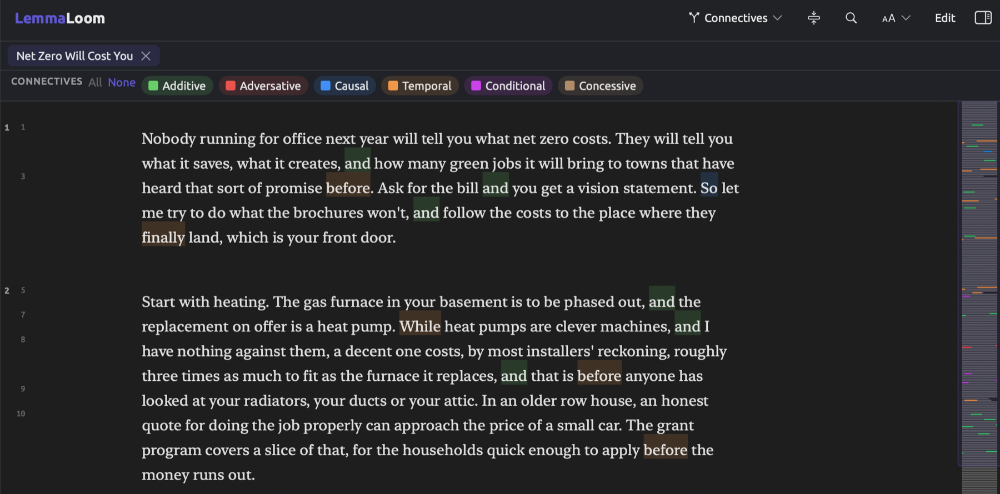
| Aspect | English | German | Chinese |
|---|---|---|---|
| Additive | and, also, moreover, furthermore, besides, likewise, similarly | und, auch, außerdem, zudem, ferner | 而且, 并且, 此外, 另外, 以及 |
| Adversative | but, however, yet, nevertheless, instead, whereas, rather | aber, jedoch, allerdings, hingegen, sondern | 但是, 但, 然而, 不过, 可是, 却 |
| Causal | because, therefore, thus, hence, consequently, since, so | weil, denn, daher, deshalb, folglich, da, also | 因为, 由于, 所以, 因此, 于是 |
| Temporal | then, meanwhile, afterwards, before, after, finally, next, when, while | dann, danach, bevor, nachdem, schließlich, während, als | 然后, 接着, 随后, 之后, 最后, 首先 |
| Conditional | if, unless, otherwise, provided | wenn, falls, sofern, sonst | 如果, 要是, 假如, 只要, 除非, 否则 |
| Concessive | although, though, albeit | obwohl, obgleich, dennoch, trotzdem | 虽然, 尽管, 即使, 哪怕 |
The table provides just a sample; the list for most aspects is slightly longer. In speeches and debates, Additive annotates almost every usage of and, so disabling it is recommended if it crowds out the other aspects.
The Temporal aspect applies to before in before the money runs out because it connects two clauses but not in before an election since it is used there as a preposition. Among conjunctions and adverbs, all of the words listed retain their particular aspect no matter how they are used. So in so hot becomes Causal even when there is no cause being discussed, and the word since remains Causal even in since the flood reached her street; while is Temporal even when it means whereas. Additionally, the German word da (meaning there, frequent in speech) becomes Causal regardless of meaning.
The Metadiscourse lens contains its own specific Connective aspect, which annotates, whatever the relation, only the linking adverbs a speaker uses to steer the listener, such as however and therefore (see Metadiscourse later in this chapter).
Sentence fields (German)
Sentence fields displays the word order of a German sentence in accordance with the field model employed by German grammar. Finite verbs, those conjugated to agree with the sentence subject, constitute the left bracket (Linke Klammer). Participles, infinitives, and separable prefixes of verbs typically occur at the end of the clause in the right bracket (Rechte Klammer). Any elements preceding the left bracket constitute the Vorfeld, while elements appearing between both brackets make up the Mittelfeld; anything following the right bracket belongs to the Nachfeld. This lens becomes handy during studies analyzing which elements German authors lead off their sentences with because the Vorfeld usually contains topics or information stressed by writers.
Below is an example sentence containing all five fields:
Meine Nachbarin hat gestern bis drei Uhr draußen gesessen, weil ihre Wohnung unerträglich heiß war.
| Field | Words |
|---|---|
| Vorfeld | Meine Nachbarin |
| Linke Klammer | hat |
| Mittelfeld | gestern bis drei Uhr draußen |
| Rechte Klammer | gesessen |
| Nachfeld | weil ihre Wohnung unerträglich heiß war |
If the sentence has no right bracket, like Wir streiken heute vor dem Rathaus, Mittelfeld encompasses anything following the finite verb. Separable prefixes, like an in Der Streik fängt um acht an, act as right brackets.
The lens sees sentences as single clauses and regards the first occurrence of a finite verb as the left bracket. If the sentence starts with a subordinate clause, such as Weil es so heiß war, bin ich nach Hause gegangen, then the fields come out wrong; the first finite verb is actually war, which means war is the left bracket. Consequently, the main verb, bin, becomes part of the Mittelfeld. Determining the right bracket follows the same method where the last participle, infinitive, or separable prefix forms the right bracket; in the case of Wir haben versucht, die Abgeordneten zu überzeugen, the right bracket is überzeugen and versucht belongs to the Mittelfeld, while the sentence has no Nachfeld. If a sentence lacks a finite verb, then LemmaLoom leaves it uncolored. Punctuation marks stay uncolored too.
The following figure shows part of “Running Out of Time (German)”, the translated text from the op-ed article “Running Out of Time” in the project “Climate Debate”. Here, the opening line of the German translation begins with Um Mitternacht an diesem heißen Sommertag zeigte, making Um Mitternacht an diesem heißen Sommertag the Vorfeld, zeigte the left bracket, and the separable prefix an at its end the right bracket.
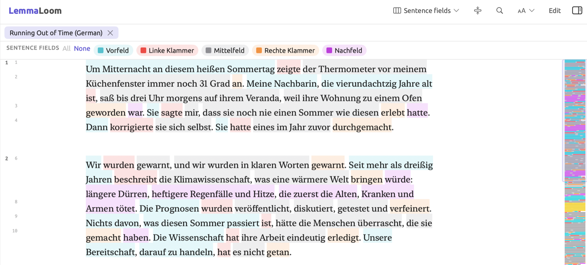
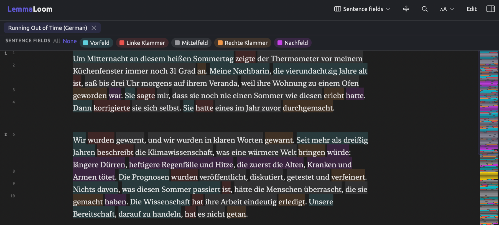
Constructions and Particles (Chinese)
Two lenses are available for analyzing Chinese documents only. They allow you to understand your text better if your study concerns how events are framed, including actors acting upon objects in 把 sentences and actions performed upon somebody in 被 sentences.
Constructions highlights the typical keywords found within four sentence constructions:
| Aspect | What it annotates | Example |
|---|---|---|
| 把 disposal | 把, which brings the object before the verb | 他们把太阳能板装在屋顶上。 |
| 被 passive | 被 and the other passive markers the analysis recognizes | 铁轨被高温晒弯了。 |
| 是…的 focus | 是 and the sentence-final 的 when they frame a sentence | 我是去年开始参加罢课的。 |
| Existential 有 | 有 (and 没有) used as a verb | 广场上有两百个学生。 |
The analysis tags both possessive 有, as seen in 我有时间, and existential 有 with the same tag; thus, Constructions will annotate it.
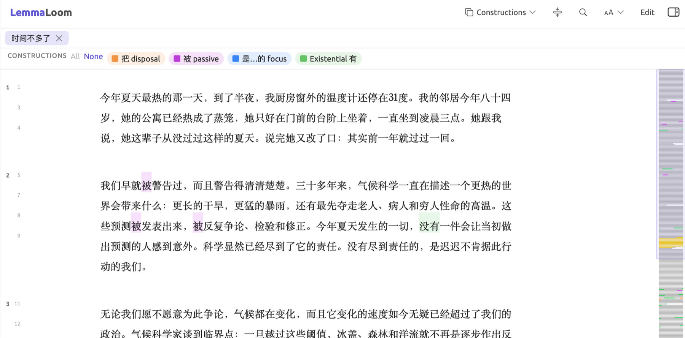
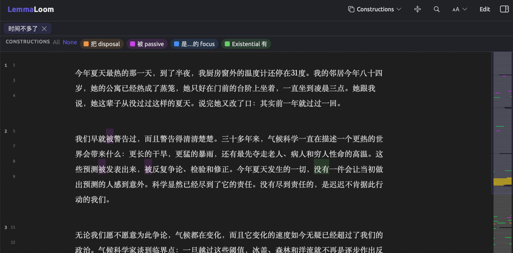
Particles highlights grammatical particles and classifiers:
| Aspect | What it annotates | Example |
|---|---|---|
| 了 perfective | 了 as a perfective particle after a verb | 我们签了请愿书 |
| 着 durative | 着 after a verb | 她举着牌子 |
| 过 experiential | 过 after a verb | 我去过那个农场 |
| 的 attributive | 的 linking a modifier to a noun | 我的女儿; 种大麦的农民 |
| 地 adverbial | 地 linking a modifier to a verb | 慢慢地走 |
| 得 complement | 得 introducing a complement of degree or result | 涨得很快 |
| Classifier | measure words | 个 in 两百个学生 |
Sentence-final 了, which the analysis treats as a modal particle, has been excluded here. The Metadiscourse lens labels it as a Final particle.
Cohesion
Cohesion shows how each sentence relates back to what had been said previously in the document. This is based on the premise that each sentence usually begins with what has been established beforehand (theme), while ending with new information. According to text linguistics, texts become easier to understand when each theme connects back to a previous sentence.
The lens discovers each sentence’s theme and highlights it according to its relation with preceding sentences. In the English language, the theme consists of the complete subject phrase of the main verb in the sentence. For German, the theme is the Vorfeld, or else the complete subject phrase when there is no Vorfeld. In Chinese, the theme is the topic, or the complete subject phrase when the analysis finds no topic.
| Aspect | When it is used |
|---|---|
| Opening | The first sentence of the document, which has nothing to tie back to |
| Pronoun tie | The theme contains a third-person pronoun such as she, it, or they |
| Possessive tie | The theme contains a third-person possessive such as his, its, or their. Her counts as a Pronoun tie, because the pronoun test comes first. |
| Demonstrative tie | The theme contains this, that, these, those, or such |
| Repeated word | A noun, pronoun, number, or adjective in the theme has the same dictionary form as a noun, pronoun, number, verb, or adjective in one of the two sentences before |
| Zero anaphora | Chinese only. The main verb has no subject, so the sentence continues the topic of the one before (anaphora is a reference back to something already mentioned). Its lenslet appears in the legend of every document. |
| New topic | None of the above. The theme brings in something new, or the sentence has no theme at all. |
The tests are performed in the order they are listed in the table above, with the first passing test resulting in the assignment of its aspect. While both Pronoun tie and Repeated word aspects appear in green coloration, they are differentiated in the Cohesion section under the Discourse facet.
All sentences that lack a subject (commands, fragmentary sentences such as Net zero by 2050.) lack themes and therefore belong to New topic (typically Zero anaphora in Chinese), with only their ending underlined.
Finally, New ending (stress) is underlined in every sentence. It refers to the smallest phrase containing the last word of a sentence, unless the phrase exceeds six words; then, it refers to the last word alone.
See the sample below:
- Our village had four buses a day. (Opening)
- They ran to the market town and back. (Pronoun tie)
- Their timetable was cut twice in two years. (Possessive tie)
- The town now pays for an electric minibus. (Repeated word, since town repeats sentence 2)
- Fuel prices keep climbing. (New topic)
A run of New topic sentences may indicate jumps made by the audience without aid; however, the lens measures ties crudely. The lens identifies pronouns based on their morphological form. Ties involve solely repetitions of the same words; therefore, related terms like village and town would be considered new words by this measure. Pronouns qualify as repetitions too. When consecutive sentences start with the pronoun we repeatedly, for example in “Letter from the Climate Strike”, multiple themes appear under the category of Repeated word.
In the figure below, the news article “Carbon Tax Debate” presents various perspectives one group at a time. Sentences introducing a new group like “Rural members on both sides”, “Some”, and “Others” begin with a New topic according to this criterion. Since a quote attributed to a backbencher includes a pronoun in the quote itself (They), the measure detects this instance as a Pronoun tie.
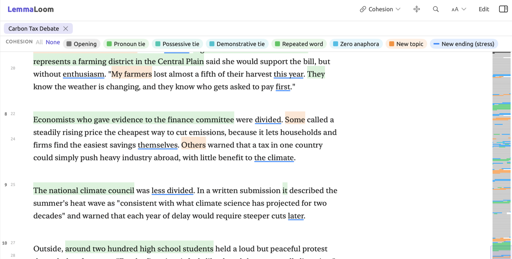
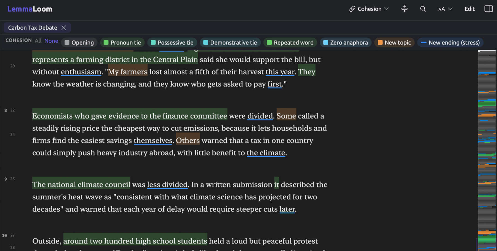
In the Cohesion section of the Discourse facet in the Grammar tab of the inspector, there is a list of all ties in every sentence of your document (even those with no theme; see Cohesion in Chapter 11, The Grammar Inspector).
Metadiscourse
There are many words which allow speakers to comment on what they say and speak directly to their listeners. Some examples would be words like perhaps, obviously, and you. All these can be highlighted via the Metadiscourse lens, which allows for an examination of the author’s stance based on hedging, bolstering, and addressing. The lens uses lexical lists and determines the word class of every word analyzed.
| Aspect | What it annotates | English examples |
|---|---|---|
| Hedge | Softens a claim | perhaps, probably, roughly, may, might, could, seem, suggest, often, usually |
| Booster | Closes down doubt | clearly, obviously, certainly, indeed, always, never, demonstrate |
| Attitude marker | States the speaker’s feeling about what is said | fortunately, unfortunately, surprisingly, sadly, hopefully |
| Connective | Steers between ideas | however, therefore, thus, nevertheless, meanwhile, instead; also, so, then, and finally at the start of a sentence |
| Engagement | Addresses or includes the listener | you, your, we, us, our, let; imperatives such as consider, imagine, and note |
| Modal particle | German only. Particles that tone a sentence toward the listener. | ja, doch, eben, halt, mal, schon |
| Final particle | Chinese only. Particles at the end of a sentence. | 吗, 呢, 吧, 啊 |
German and Chinese have separate lists. In German, Sie used as the polite you outside of the start of a sentence counts as Engagement.
In public speeches and open letters where the author frequently uses the pronouns we and you, there are numerous instances of Engagement which overwhelm the visualization. If necessary, you may disable Engagement in the legend so as to view the other aspects clearly.
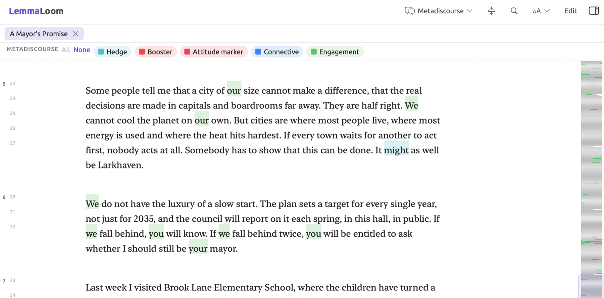
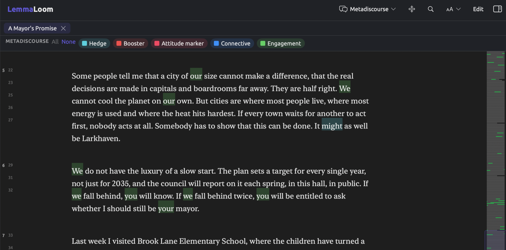
Rhetoric
Rhetoric calls attention to stylistic devices such as the passive voice and parallelism, which authors use consciously. The use of Rhetoric will be the most effective on pre-written texts such as op-ed pieces and the speech titled “A Mayor’s Promise”, allowing you to analyze how the persuasive pieces for each side were constructed. Most devices will be highlighted, whereas Nominalization, Power word, and Anaphora will be underlined. Passive voice and Correlative pair will both get a purple highlight.
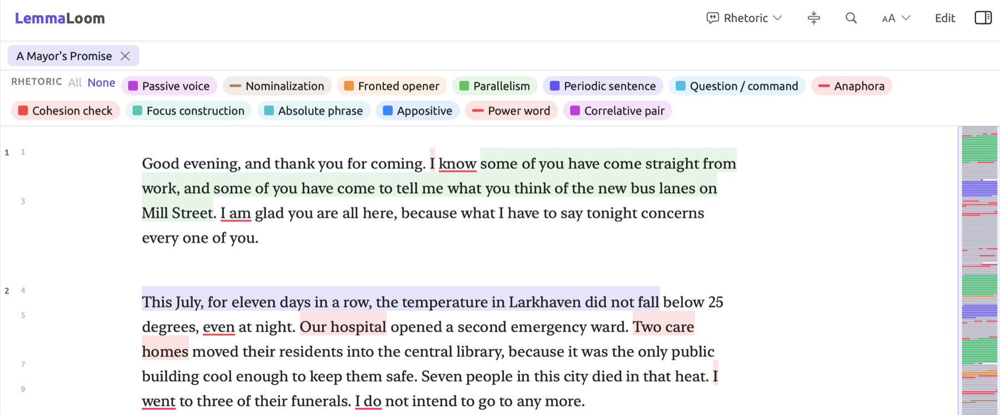
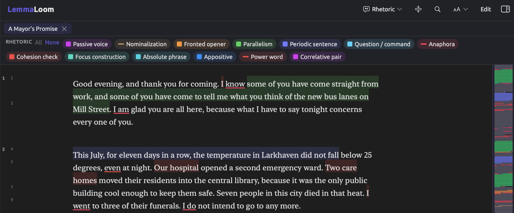
The table organizes the devices in testing order:
| Aspect | What it annotates |
|---|---|
| Passive voice | A passive verb group, as in the schools were closed |
| Nominalization | A noun made from a verb or adjective. In English, a noun of seven letters or more ending in -tion, -sion, -ment, -ness, -ity, -ance, -ence, or -ism (decision, payment); in German, endings such as -ung, -heit, and -keit |
| Fronted opener | Words placed before the subject at the start of a sentence, such as an adverbial or a participle phrase (After the flood, the council…) |
| Parallelism | Three or more coordinated items, or two coordinated clauses that each have a subject (we marched and they watched) |
| Periodic sentence | A sentence of at least twelve words with at least 55 percent of them before its main verb (in a sentence of 20 words, at least 11). In German, a sentence whose Mittelfeld holds eight words or more before the right bracket closes it |
| Question / command | A whole question or imperative sentence |
| Focus construction | Sentences reshaped to put one element in the spotlight, such as there is…, what we need is…, and it was the farmers who… |
| Absolute phrase | A noun with a participle, standing apart from the clause (the vote taken, we went home) |
| Appositive | A noun phrase that renames the one beside it |
| Power word | A superlative, an intensified adjective or adverb (extremely hot), or a stressing adverb such as only, never, or even |
| Correlative pair | Paired conjunctions such as both … and, either … or, and neither … nor |
| Cohesion check | The theme of a sentence of six words or more that the Cohesion lens counts as a New topic |
| Anaphora | The first two words of consecutive sentences that open with the same word, other than the, a, an, and, but, so, and then. This is the rhetorical figure, unrelated to Zero anaphora in Cohesion. |
Every word annotation displays one rhetoric device from the table, the first in the table’s order whose test applies to it. Since Question / command affects the entire sentence while Periodic sentence affects everything preceding the sentence’s main verb, these two have precedence over other devices lower in the table. First-person pronouns like I and we count as openers, hence Anaphora will tag plenty of beginnings of sentences in “Why We Block the Roads”.
German and Chinese have their own versions of most tests. For instance, Fronted opener marks a Vorfeld that does not hold the subject in German, while in Chinese it will highlight a fronted topic. Absolute phrase is detected only in English documents, while Periodic sentence is detected in both English and German. Lenslets pertaining to all devices, including these two, will display in the legend of each document.
The Rhetoric section under the Discourse facet in the Grammar tab of the inspector contains a list of all identified rhetoric devices with brief explanations of why they were tagged. The list includes any findings concealed within the body of the text; namely, those which were tagged with a disabled aspect or whose words show earlier devices (see Rhetoric in Chapter 11, The Grammar Inspector).
Codes and Bookmarks
Codes visualizes all coded passages in the document in the format and color of the particular code itself (choose Highlight, Underline, or Boxed from Format during creation and editing of codes; see The fields of a code in Chapter 7, Coding). It draws colored bars next to each coding in the gutter to the left side of your text as well. Disabling Codes hides these visualizations. When coding, keep Codes enabled. Once you’re done coding, however, disable Codes when you want to read your text without seeing all your coding.
Bookmarks will highlight every passage marked with a bookmark in the bookmark’s color, and draw that bookmark both in the gutter and document overview.
Both memos and links will be visible regardless of which lenses you may have enabled, as codings are while Codes is enabled.
Dictionary lenses
Dictionaries appear in the lens menu, under their own names, in the annotations group. A dictionary lens highlights the terms of each of its categories using the specified category colors, and its legend contains a single aspect lenslet per category. The “Climate Debate” project includes one dictionary, “Hedges”, containing two categories, Approximators and Shields. When “Hedges” is enabled, its legend will include these two lenslets. Consider It seems to me the burden falls on just about everyone from “Radio Debate”; It seems is highlighted as a shield and just about as an approximator. A dictionary lens is useful if your study uses its own categorizations of particular words. Some examples include hedges, blaming language, or terms within a specific policy field.
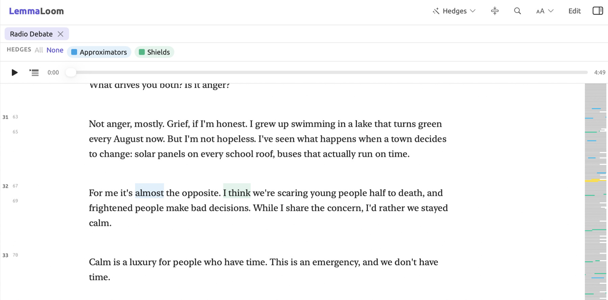
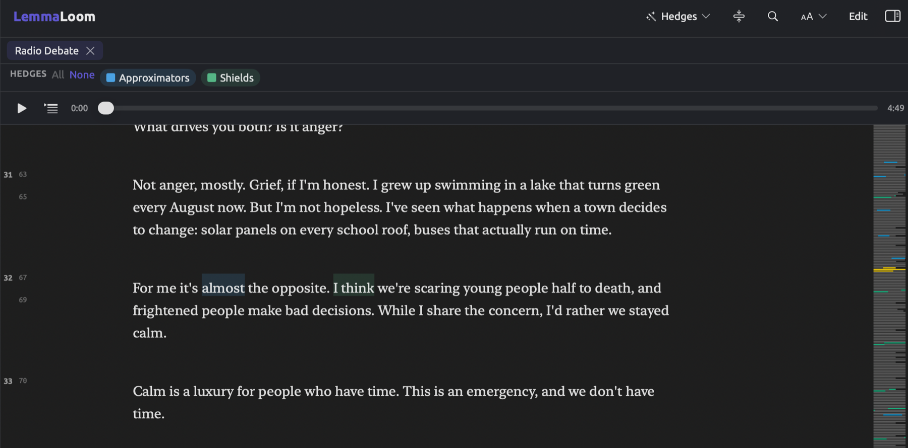
Dictionary matching matches a term as a whole word and does not take capitalization or accent marks into account, but matches Chinese terms anywhere they appear (see How terms are matched in Chapter 19, Dictionaries). Each form must be entered separately as separate terms. For example, if you wish for both model and models to match, then they should each be added as terms. Dictionary matching does not consider grammar. About in Here’s the thing about panic, from “Let’s Not Panic”, is highlighted as an approximator despite being a preposition. Enabling the lens causes the legend to appear immediately, whereas highlighting will happen only after the terms are matched. Editing your dictionary when the lens is enabled causes annotations to be updated accordingly.
Unlike the predetermined set of hedges available in the pre-built Hedge list of Metadiscourse, dictionaries contain user-defined terms and categorizations. Rules, however, such as a part of speech, may be added using a query lens.
Query lenses
You can save a query lens from any query which finds passages within the text. Open the Save menu (the box with the arrow pointing down, in the query header) and click on Save as Lens… (see Saving a query as a lens in Chapter 18, Using Query Results). The “Climate Debate” project has a saved query lens called “Urgency Talk” which highlights sentences containing the words urgent, urgency, crisis, emergency, or deadline if they overlap passages with the code “Urgency”. A query lens is suitable for answering any questions involving the combination of rules, for instance the presence of words combined with the word’s grammatical features, or codings combined with words. The availability of a query lens in documents relies upon the Available In choice made when the query was saved:
- a query saved for All Projects or for the Project appears in every document of the project;
- a query saved for a Set appears in the documents of that set and in their translations;
- a query saved for a Document appears in that document only.
“Urgency Talk” has been saved for the Project, and is thus available for annotation in each document in the “Climate Debate” project.
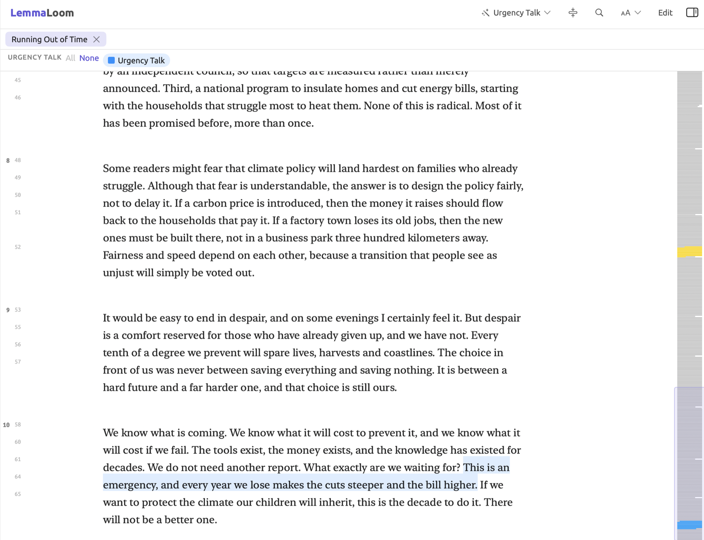
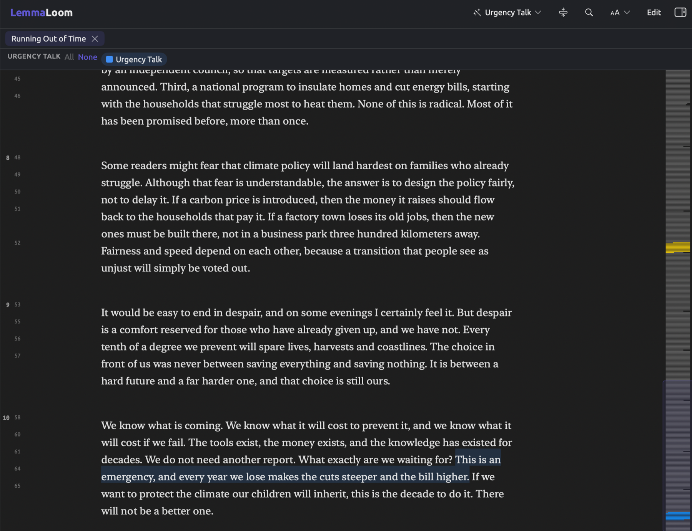
A query lens marks up the hits from its parent query. When there are no categories involved in a query lens, its legend displays one lenslet whose name corresponds to the query; all hits are highlighted. If the query lens contains categories, each category is an aspect, and has its own distinct color and style (Highlight or Underline, as set in the query’s Categories condition). With Color By, each unique value in the hits gets its own aspect, up to sixteen total. The first eight of these values are highlighted; the next eight get underlined in the same eight colors (see Categories and Color By in Chapter 15, Building a Query). Each query lens displays its legend with lenslets showing squares.
When codings or bookmarks in the document change, the query lenses run again, so a query that looks for coded passages stays current as you code. To remove a query lens from its place in the lens menu, access the Save menu of the query and click on Remove Lens. See the conditions required to transform a query into a lens in Which queries can be lenses in Chapter 18, Using Query Results.
Analyzer lenses
Analyzers you define through Window ▸ Analyzers find spans of text and assign them keys. The keys in the analyzer’s legend define aspects of its lens. All your analyzers are found as the second group in the lens menu under their individual names, and only available in documents where the languages match those the analyzer can process. Only spans assigned a key within the analyzer’s legend will show up in your lens, colored and styled (Highlight, Underline, Text color, or Bold) according to that particular key’s definition in the legend. Essentially, an analyzer is needed whenever you seek out a pattern repeatedly across your documents and none of the existing lenses, dictionaries, or queries capture it.
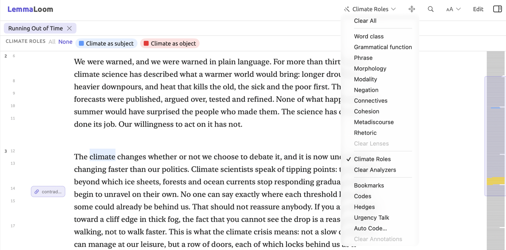
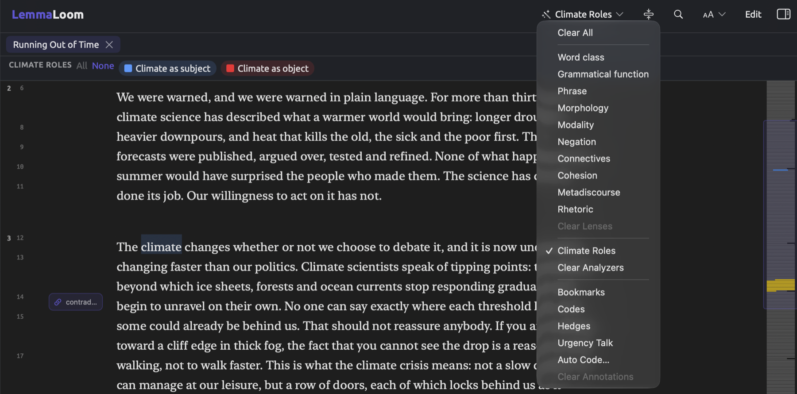
Skipping an analyzer for a document or removing its output within Document Properties will cause its lens to disappear from the lens menu of that document (see Analyzers for each document in Chapter 20, Custom Analyzers). For additional detail on writing analyzers and execution timing, please refer to Chapter 20, Custom Analyzers.
Lens colors and styles
Four of the lenses (Word class, Grammatical function, Phrase, and Morphology) are customizable with regard to their color and style. Your customizations will affect the appearance of the lens regardless of which document within which project you’re looking at. All other built-in lenses have preset colors. Lenses generated by dictionaries, queries, and analyzers derive their colors based on the categories and keys of those objects. Adjust colors whenever two aspects become visually indistinct to you, or whenever you need to overlay extra lenses beyond their default styles’ capabilities.
Each aspect may appear as one of four styles:
| Style | How the word looks |
|---|---|
| Highlight | A pale band of color behind the word |
| Underline | A colored line under the word |
| Text color | The letters in the color |
| Bold | The letters in bold and in the color |
Word class and Grammatical function lenses underline by default. The Phrase and Morphology lenses highlight instead.
The figure below demonstrates the Settings window’s Lenses pane with rows for each aspect of Word class and Grammatical function lenses, each set to Underline.
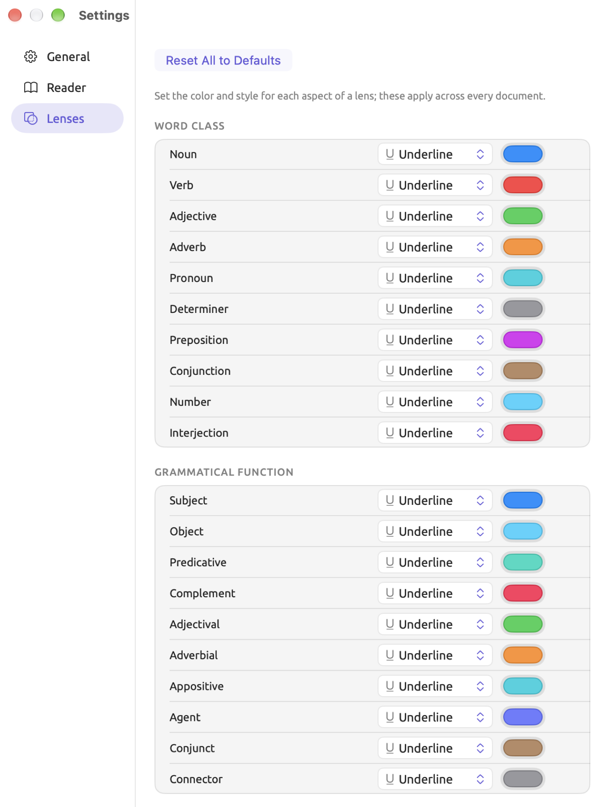
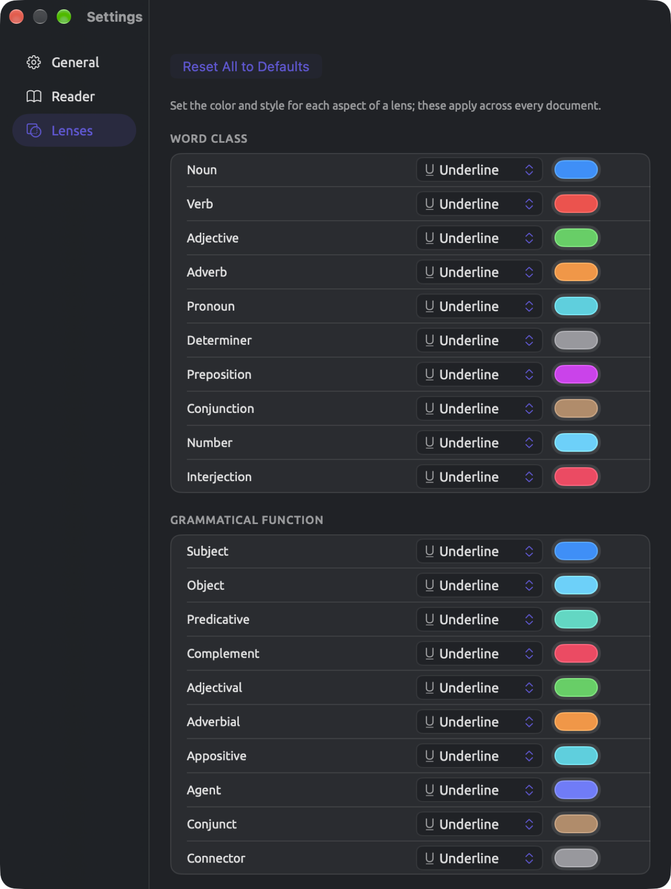
To modify the appearance of an aspect:
- Choose LemmaLoom ▸ Settings… (⌘,) and click Lenses.
- Find the lens’s section and the aspect’s row, such as Noun under Word class.
- Choose a style from the menu in that row, which shows the current style, such as Underline.
- Click the color well beside it and choose a color.
Open documents update immediately when you make a change. In Help ▸ Glossary, tags and terms representing an aspect, like NN for Noun, are colored and styled in accordance with that aspect’s color and style settings. Lenslets in the legend display the default colors and shapes of aspects, and therefore after a modification the lenslet and its words in the text differ. Each modified aspect receives a reset button, shown at the end of its row as a curved arrow with a tooltip like Reset Noun. Clicking on it resets the aspect to its defaults. At the very top of the pane, the Reset All to Defaults button resets all aspects of all four lenses simultaneously (see The Lenses pane in Chapter 24, Settings and Appearance).